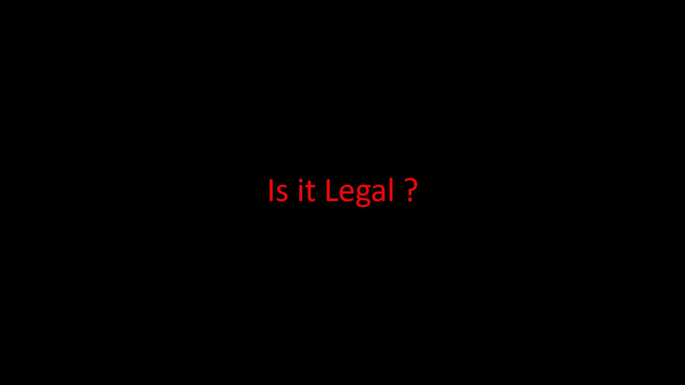

Is It Legal to Use the Tor Network?
Also, finally, let's clarify whether it is legal to use the Tor network.

In fact, Whether it is legitimate depends entirely on what purpose you are using the Tor network. So in most cases you wouldn't be accused just for connecting to the Tor network. Just being connected to the Tor network is not a direct crime. However, you are responsible for all your activities on the tor network. If you have criminal activities and you are caught, it is quite natural that you will be accused. In summary, any non-criminal activity won't pose a legal problem as it is carried out over the Tor network. If you have criminal activities, nothing can protect you. In this course your aim is to gain the basic awareness that will enable you to protect your personal data. No one can promise you one hundred percent anonymity. If it does, it is not true. You will already see the limits of anonymity and privacy in this course.
In the next section, we will continue with the explanations Tor Browser, which is first use method.